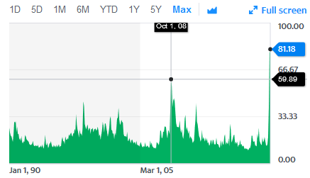

---
redirect_from:
  - "/04/01-modeling-intro"
interact_link: content/04/01_modeling_intro.ipynb
kernel_name: python3
kernel_path: content/04
has_widgets: false
title: |-
  Modeling Intro
pagenum: 20
prev_page:
  url: /04/00_intro.html
next_page:
  url: /04/02_git_collaboration.html
suffix: .ipynb
search: data com model www models loss zoom ai ml project questions analysis example try click screen kbd assignment machine org likely not good interesting regression grade function teams lets class wrong chat second jupyter dont right instructions learning risk firms google pdf methods statistical projects much should often mean big github form png still recommend while home r let me online join classroom left kbdwindows snap window new sense question generally promise loans fraud internal investment real b productivity financial service want gone flu gking files cancer better bias arxiv criminal sentencing predictions few spend developing knowledge start problem before

comment: "***PROGRAMMATICALLY GENERATED, DO NOT EDIT. SEE ORIGINAL FILES IN /content***"
---

    <main class="jupyter-page">
    <div id="page-info"><div id="page-title">Modeling Intro</div>
</div>
    <div class="jb_cell">

<div class="cell border-box-sizing text_cell rendered"><div class="inner_cell">
<div class="text_cell_render border-box-sizing rendered_html">
<h1 id="Modeling-Intro">Modeling Intro<a class="anchor-link" href="#Modeling-Intro"> </a></h1>
</div>
</div>
</div>
</div>

<div class="jb_cell">

<div class="cell border-box-sizing text_cell rendered"><div class="inner_cell">
<div class="text_cell_render border-box-sizing rendered_html">
<h2 id="But-first,-let's-acknowledge-how-crazy-it-is-out-there...">But first, let's acknowledge how crazy it is out there...<a class="anchor-link" href="#But-first,-let's-acknowledge-how-crazy-it-is-out-there..."> </a></h2><p></p>
<p><a href="https://www.reddit.com/r/funny/comments/fjie8a/experts_recommend_keeping_your_daily_rituals_even/">Still, experts recommend keeping your daily rituals even while working from home</a></p>
<p></p>
<p><strong>Seriously: If you have issues with internet, food, security, stability, anything: Please let me and possibly Lehigh staff know. We will try to find and direct resources your way.</strong></p>
<h2 id="Zoom...-I-didn't-expect-this-to-be-an-online-class.-I'm-sure-nothing-will-go-terribly-wrong...">Zoom... I didn't expect this to be an online class. I'm sure nothing will go terribly wrong...<a class="anchor-link" href="#Zoom...-I-didn't-expect-this-to-be-an-online-class.-I'm-sure-nothing-will-go-terribly-wrong..."> </a></h2>
</div>
</div>
</div>
</div>

<div class="jb_cell tag_remove_input">

<div class="cell border-box-sizing code_cell rendered tag_remove_input">

<div class="output_wrapper">
<div class="output">

<div class="jb_output_wrapper }}">
<div class="output_area">


<div class="output_html rendered_html output_subarea output_execute_result">
<iframe width="560" height="315" src="https://www.youtube.com/embed/q0ObP9P_aZk" frameborder="0" allow="accelerometer; autoplay; encrypted-media; gyroscope; picture-in-picture" allowfullscreen></iframe>
</div>

</div>
</div>
</div>
</div>

</div>
</div>

<div class="jb_cell">

<div class="cell border-box-sizing text_cell rendered"><div class="inner_cell">
<div class="text_cell_render border-box-sizing rendered_html">
<p><a href="https://www.youtube.com/watch?v=q0ObP9P_aZk">Link to that</a></p>
<ul>
<li>When you join the classroom: Ensure your mic is muted, then click on the "participation" and "chat" buttons</li>
<li>If you have a second screen at home, use one for Zoom and one for Jupyter</li>
<li>If you don't have a second screen, I recommend making the zoom screen the left side and Jupyter the right side of your screen.<ul>
<li>on windows, click on the Zoom app and hit <kbd>Windows</kbd> + <kbd>Left</kbd> to snap it left, and then click on your Jupyter window and click <kbd>Windows</kbd> + <kbd>Right</kbd> to snap it right</li>
<li>on mac, <a href="https://support.apple.com/en-us/HT204948">follow these instructions</a> </li>
</ul>
</li>
</ul>

</div>
</div>
</div>
</div>

<div class="jb_cell">

<div class="cell border-box-sizing text_cell rendered"><div class="inner_cell">
<div class="text_cell_render border-box-sizing rendered_html">
<h2 id="But-second-first,-some-thoughts-about-the-assignment">But second first, some thoughts about the assignment<a class="anchor-link" href="#But-second-first,-some-thoughts-about-the-assignment"> </a></h2><ul>
<li>Due Monday!</li>
<li>Up/down: Do the new instructions make sense?</li>
<li>Let me show you what my directory looks like...</li>
<li>Chat window: What question do you have about the new instructions, or generally about the assignment as you try to finish it?</li>
</ul>

</div>
</div>
</div>
</div>

<div class="jb_cell">

<div class="cell border-box-sizing text_cell rendered"><div class="inner_cell">
<div class="text_cell_render border-box-sizing rendered_html">
<h2 id="The-promise-of-machine-learning">The promise of machine learning<a class="anchor-link" href="#The-promise-of-machine-learning"> </a></h2><ol>
<li>Robo-advising</li>
<li>Manage risk (loans and insurance) to reduce write-offs and lower costs for consumers</li>
<li>Prevent and detect fraud (external and internal)</li>
<li>Investment choices - stocks, real estates (where to put factories, banks, etc)</li>
<li>Improve ad offers to credit customers</li>
</ol>
<p><a href="https://www.forbes.com/sites/donnafuscaldo/2019/12/19/ais-promise-140-billion-in-productivity-gains-for-financial-services-firms/#576a08fe3533">Accenture thinks AI will add $140B of</a> value to financial service firms alone via cost and productivity savings by 2025.</p>
<p>Don't you want to capture a little of that?</p>

</div>
</div>
</div>
</div>

<div class="jb_cell">

<div class="cell border-box-sizing text_cell rendered"><div class="inner_cell">
<div class="text_cell_render border-box-sizing rendered_html">
<h2 id="Machine-Learning-gone--wrong">Machine Learning gone  wrong<a class="anchor-link" href="#Machine-Learning-gone--wrong"> </a></h2><ul>
<li><a href="https://gking.harvard.edu/files/gking/files/0314policyforumff.pdf">Google Flu Trends</a> consistently over predicted flu prevalence</li>
<li>IBM's Watson tried to predict cancer. How'd it go? According to internal documents: "This product is a piece of sh–."</li>
<li>Amazon's engineers used ML to evaluate applicants but taught the model <a href="https://www.theguardian.com/technology/2018/oct/10/amazon-hiring-ai-gender-bias-recruiting-engine">that males were automatically better</a></li>
<li><p>Chatbots have had many struggles. Here's Microsoft's <a href="https://medium.com/asecuritysite-when-bob-met-alice/machine-learning-gone-bad-990e132024ea">attempt at speaking like the youths</a>:</p>
<p></p>
</li>
<li>ML/AI methods replicate patterns in the data by design: <a href="https://arxiv.org/pdf/1608.07187.pdf">If you give it data with human biases, then the AI can easily become biased.</a> This has led to debates about how to use ML for <ul>
<li>Criminal sentencing <a href="https://www.propublica.org/article/machine-bias-risk-assessments-in-criminal-sentencing">based on "risk predictions"</a> overweight race</li>
<li><a href="https://arxiv.org/abs/1301.6822">Online advertising</a> - Google is more likely to serve up arrest records in searches for names assigned "primarily to black babies"</li>
</ul>
</li>
<li>Google will stitch together photos
  </li>
</ul>
<p>I guess Google's AI thought the guy was built like a mountain...</p>

</div>
</div>
</div>
</div>

<div class="jb_cell">

<div class="cell border-box-sizing text_cell rendered"><div class="inner_cell">
<div class="text_cell_render border-box-sizing rendered_html">
<h2 id="How-to-define-a-project-and-structure-the-process">How to define a project and structure the process<a class="anchor-link" href="#How-to-define-a-project-and-structure-the-process"> </a></h2><blockquote><p>A few times a year, I get asked to be a judge of student statistical projects in politics or sports. While the students are very bright, they spend WAY too much time using fancy statistical methods and not enough time framing the right questions and contextualizing their answers. If you want to be a good data scientist, you should spend ~49% of your time developing your statistical intuition (i.e. how to ask good questions of the data), and ~49% of your time on domain knowledge (improving overall understanding of your field). Only ~2% on methods per se. - Nate Silver</p>
</blockquote>
<h3 id="Start-with-an-interesting-question-or-problem">Start with an interesting question or problem<a class="anchor-link" href="#Start-with-an-interesting-question-or-problem"> </a></h3><blockquote><p>Before you begin the analysis, know the questions you're trying to answer and what you're trying to accomplish - don't fall into an analytical rabbit hole. Additionally, you should know some basic things about your potential data - what data sources are available to answer the questions? How is that data structured? Is it in a database? CSVs? Third-party APIs? What tools will you be able to use for the analysis?</p>
<p><strong>Your approach will likely change throughout, but it's helpful to start with a plan and adjust.</strong></p>
</blockquote>
<p>Two types of questions:</p>
<ul>
<li>Relationships: Do airline closures affect how VCs monitor portfolio companies? <em>(Positively, negatively, or not? How much? Is the relationship because one causes the other, or something else?)</em></li>
<li>Predictions: Which loans will default? </li>
</ul>
<h3 id="Pick-your-model(s)">Pick your model(s)<a class="anchor-link" href="#Pick-your-model(s)"> </a></h3><p><strong>A model is an idealized representation of a system</strong></p>
<ul>
<li>"All models are wrong, but some are useful" - George Box<ul>
<li>Really! </li>
</ul>
</li>
<li>Relationship model: When people have one ice cream cone, they are 2% more likely to drown<ul>
<li>Model should summarize the data</li>
<li>Simpler models are better because they are easier to interpret</li>
<li><strong>Example: Linear models (usually regression) are nice: $final grade = b + m * midterm grade$</strong></li>
</ul>
</li>
<li>Prediction model: Loan defaults over the next three months are 20% more likely for restaurant and service workers.<ul>
<li>More complex models are often favored</li>
<li>May not summarize the data, and often are impossible to interpret</li>
<li><strong>Example: Nearest neighbor model: $final grade = nearest neighbor(midterm grade)$</strong></li>
</ul>
</li>
</ul>
<p><strong>To estimate any model</strong></p>
<p>We will talk in depth about a few models in class, but generally, these three steps always apply:</p>
<ol>
<li>Select a model. (For example: find the "center" of a univariate distribution, regression, logistic)<ul>
<li>Use knowledge about the area to help pick </li>
</ul>
</li>
<li>Select a loss function. (For example: Mean squared error, mean absolute deviation, R2)<ul>
<li>There are many loss functions!</li>
<li>The loss function choice affects the accuracy and speed of estimation</li>
<li>Choice depends on the estimation task</li>
<li>Qualitative or quantitative data?</li>
<li>Are all errors equal? (A false negative on a cancer test is much worse than a false positive!)</li>
<li>Do outliers matter more or less? </li>
<li>Some models often imply the loss function. For example, regression's loss function is almost always Mean Squared Error. </li>
</ul>
</li>
<li>Fit the model by minimizing the loss.</li>
</ol>
<h3 id="Required-reading-before-Thursday">Required reading before Thursday<a class="anchor-link" href="#Required-reading-before-Thursday"> </a></h3><ol>
<li><a href="http://www.gregreda.com/2014/03/23/principles-of-good-data-analysis/">Principles of good data analysis, by Greg Reda</a></li>
<li><a href="https://www.textbook.ds100.org/ch/10/modeling_intro.html">Chapter 10 of Data 100</a></li>
<li><a href="https://www.bloomberg.com/news/articles/2019-11-09/how-big-investors-cash-in-on-alternative-data-quicktake">How Big Investors Cash in on Alternative Data</a></li>
</ol>

</div>
</div>
</div>
</div>

<div class="jb_cell">

<div class="cell border-box-sizing text_cell rendered"><div class="inner_cell">
<div class="text_cell_render border-box-sizing rendered_html">
<h2 id="Starting-our-projects">Starting our projects<a class="anchor-link" href="#Starting-our-projects"> </a></h2><ul>
<li>Projects groups of 3 or 4. You'll collaborate within a GitHub repo (more soon on that).</li>
</ul>
<h3 id="Timeline:">Timeline:<a class="anchor-link" href="#Timeline:"> </a></h3><p><a href="https://ledatascifi.github.io/assignments/project.html">See the project assignment page</a>.</p>
<h3 id="Collective-brainstorming">Collective brainstorming<a class="anchor-link" href="#Collective-brainstorming"> </a></h3><p><strong>Discussion time:</strong> I'll keep track of a list - Let's free form this...</p>
<ul>
<li>What interesting applications of "big data" have you seen? </li>
<li>Think about interesting firms, developing stories (COVID), business problems you've seen.</li>
<li>We need a finance angle, which includes but is not limited to:<ul>
<li>Fed policy</li>
<li>Investment platforms</li>
<li>Asset returns</li>
<li>Retirement planning</li>
<li>Crypto</li>
<li>Firm investments</li>
<li>Real estate</li>
<li>Fraud</li>
<li>Cybersecurity</li>
</ul>
</li>
</ul>
<h3 id="Teams">Teams<a class="anchor-link" href="#Teams"> </a></h3><ul>
<li>Let's try to form teams of 3 or 4 now (can use Zoom chat, text, email)</li>
<li><strong>Head into Breakout rooms and discuss project ideas</strong> <ul>
<li>Which project ideas so far interest you?</li>
<li>Do you have a sense of what ML techniques might be interesting to try on that problem? </li>
<li><em>Note: If regression, you can still use ML to build variables as <strong>inputs</strong> to regression analysis (a la Assignment 5)</em></li>
</ul>
</li>
</ul>
<h3 id="After/during-class">After/during class<a class="anchor-link" href="#After/during-class"> </a></h3><p>Formally form teams:</p>
<ul>
<li>Go to <a href="https://classroom.github.com/g/nv0-pqH7">https://classroom.github.com/g/nv0-pqH7</a> . </li>
<li>The first person on the team that goes there creates the team. The rest join.</li>
<li>I might have to tweak the teams</li>
</ul>

</div>
</div>
</div>
</div>

 


    </main>
    